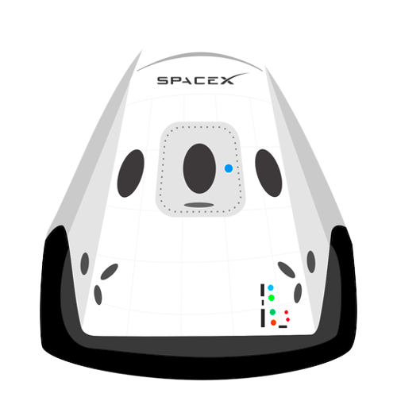

Hyperblog Tu blog de cabecera.
Aqui Inicia la Historia de un gran proyecto
Y este es el párrafo de inicio donde vamos a explicar las cosas increibles que se pueden hacer con ramas.

Los blogs son la mejor manera de compartir tus ideas.Mucho mas que ir a conferencias o salir en Youtube. Excepto si eres un Rockstar. Pero estadisticamente no lo eres..al menos por ahora.
Suscribete y dale like